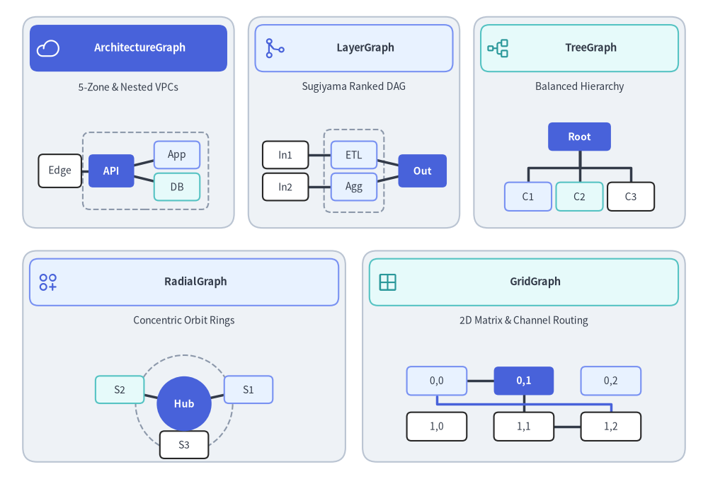
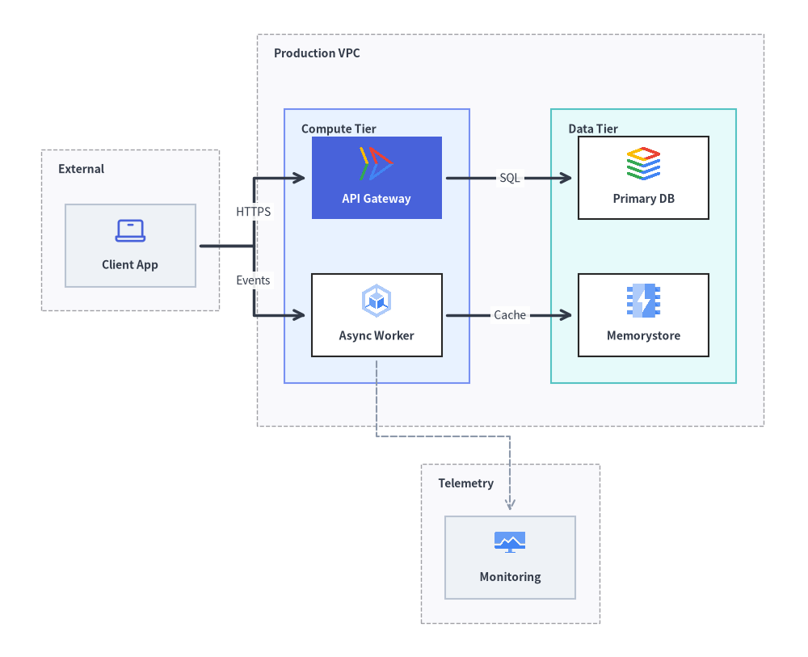
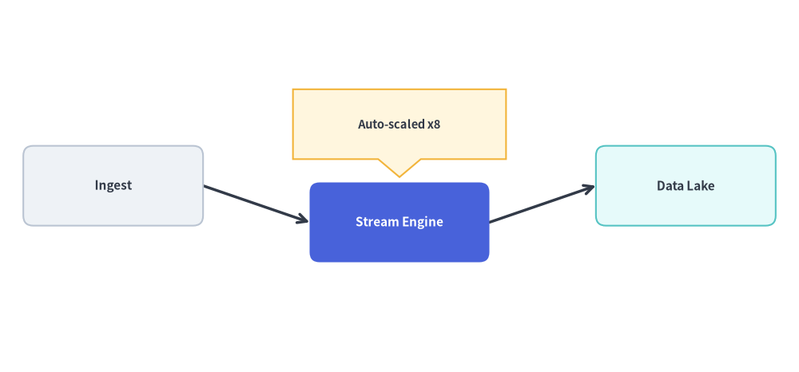

Graph Engine Overview (drawlib.graph)
drawlib.graph is a declarative pure coordinate and layout calculator powered by five specialized layout solvers (ArchitectureGraph, LayerGraph, TreeGraph, RadialGraph, and GridGraph).
Instead of manually computing (x, y) coordinates for every vertex and container when drafting a complex topology, you declare structural relationships—nodes, edges, and clusters—and call layout = g.get_layout(width=..., height=...) so Drawlib's pure-Python layout algorithms calculate clean coordinates, container bounding boxes, and orthogonal or radial edge routes automatically. You then render the solved coordinates using drawlib.diagrams or drawlib.shapes and drawlib.lines.

Source Code
import math
from drawlib.canvas import save, setup
from drawlib.icons import phosphor
from drawlib.lines import line, lines
from drawlib.shapes import circle, rectangle
from drawlib.styles import Styles
from drawlib.text import text
setup(width=124, height=84)
# Row 1: 3 Cards (ArchitectureGraph, LayerGraph, TreeGraph)
row1_cards = [
(22.5, 62.5, 37.0, "ArchitectureGraph", "5-Zone & Nested VPCs", phosphor.cloud, Styles.PrimaryFlat, Styles.WhiteBold, Styles.White),
(62.0, 62.5, 37.0, "LayerGraph", "Sugiyama Ranked DAG", phosphor.git_merge, Styles.PrimaryNeutral, Styles.DarkBold, Styles.Primary),
(101.5, 62.5, 37.0, "TreeGraph", "Balanced Hierarchy", phosphor.tree_structure, Styles.SecondaryNeutral, Styles.DarkBold, Styles.Secondary),
]
# Row 2: 2 Cards (RadialGraph, GridGraph)
row2_cards = [
(32.25, 21.5, 56.5, "RadialGraph", "Concentric Orbit Rings", phosphor.circles_three_plus, Styles.PrimaryNeutral, Styles.DarkBold, Styles.Primary),
(91.75, 21.5, 56.5, "GridGraph", "2D Matrix & Channel Routing", phosphor.grid_four, Styles.SecondaryNeutral, Styles.DarkBold, Styles.Secondary),
]
for cx, cy, cw, title, subtitle, icon_fn, hdr_style, hdr_text_style, ic_style in row1_cards + row2_cards:
rectangle((cx, cy), width=cw, height=37.0, style=Styles.Neutral.patch(shape_r=2.5))
rectangle((cx, cy + 13.0), width=cw - 2.4, height=8.2, style=hdr_style.patch(shape_r=1.5))
icon_fn((cx - cw / 2.0 + 4.4, cy + 13.0), width=4.2, style=ic_style)
text((cx + 2.0, cy + 13.0), title, style=hdr_text_style.patch(text_size=10.5))
text((cx, cy + 6.2), subtitle, style=Styles.Dark.patch(text_size=10.0))
# 1. ArchitectureGraph miniature (cx=22.5, y=46..65)
rectangle((25.5, 54.0), width=22.0, height=13.5, style=Styles.MutedDashed.patch(shape_r=1.2))
line((10.5, 54.0), (19.5, 54.0), style=Styles.DarkBold)
line((19.5, 54.0), (31.0, 56.8), style=Styles.DarkBold)
line((19.5, 54.0), (31.0, 51.2), style=Styles.DarkBold)
rectangle((10.5, 54.0), width=7.5, height=5.8, style=Styles.White.patch(shape_r=0.8), text="Edge", text_style=Styles.Dark.patch(text_size=10.0))
rectangle((19.5, 54.0), width=8.0, height=5.8, style=Styles.PrimaryFlat.patch(shape_r=0.8), text="API", text_style=Styles.WhiteBold.patch(text_size=10.0))
rectangle((31.0, 56.8), width=8.0, height=4.8, style=Styles.PrimaryNeutral.patch(shape_r=0.8), text="App", text_style=Styles.Dark.patch(text_size=10.0))
rectangle((31.0, 51.2), width=8.0, height=4.8, style=Styles.SecondaryNeutral.patch(shape_r=0.8), text="DB", text_style=Styles.Dark.patch(text_size=10.0))
# 2. LayerGraph miniature (cx=62.0)
rectangle((62.0, 54.0), width=10.5, height=14.5, style=Styles.MutedDashed.patch(shape_r=1.2))
line((50.0, 56.8), (62.0, 56.8), style=Styles.DarkBold)
line((50.0, 51.2), (62.0, 51.2), style=Styles.DarkBold)
line((62.0, 56.8), (74.0, 54.0), style=Styles.DarkBold)
line((62.0, 51.2), (74.0, 54.0), style=Styles.DarkBold)
rectangle((50.0, 56.8), width=8.0, height=4.8, style=Styles.White.patch(shape_r=0.8), text="In1", text_style=Styles.Dark.patch(text_size=10.0))
rectangle((50.0, 51.2), width=8.0, height=4.8, style=Styles.White.patch(shape_r=0.8), text="In2", text_style=Styles.Dark.patch(text_size=10.0))
rectangle((62.0, 56.8), width=8.0, height=4.8, style=Styles.PrimaryNeutral.patch(shape_r=0.8), text="ETL", text_style=Styles.Dark.patch(text_size=10.0))
rectangle((62.0, 51.2), width=8.0, height=4.8, style=Styles.PrimaryNeutral.patch(shape_r=0.8), text="Agg", text_style=Styles.Dark.patch(text_size=10.0))
rectangle((74.0, 54.0), width=8.5, height=5.8, style=Styles.PrimaryFlat.patch(shape_r=0.8), text="Out", text_style=Styles.WhiteBold.patch(text_size=10.0))
# 3. TreeGraph miniature (cx=101.5)
lines([(101.5, 58.0), (101.5, 54.5), (92.5, 54.5), (92.5, 51.5)], style=Styles.DarkBold)
lines([(101.5, 58.0), (101.5, 54.5), (101.5, 51.5)], style=Styles.DarkBold)
lines([(101.5, 58.0), (101.5, 54.5), (110.5, 54.5), (110.5, 51.5)], style=Styles.DarkBold)
rectangle((101.5, 60.0), width=11.0, height=5.0, style=Styles.PrimaryFlat.patch(shape_r=0.8), text="Root", text_style=Styles.WhiteBold.patch(text_size=10.0))
rectangle((92.5, 49.5), width=8.2, height=5.0, style=Styles.PrimaryNeutral.patch(shape_r=0.8), text="C1", text_style=Styles.Dark.patch(text_size=10.0))
rectangle((101.5, 49.5), width=8.2, height=5.0, style=Styles.SecondaryNeutral.patch(shape_r=0.8), text="C2", text_style=Styles.Dark.patch(text_size=10.0))
rectangle((110.5, 49.5), width=8.2, height=5.0, style=Styles.White.patch(shape_r=0.8), text="C3", text_style=Styles.Dark.patch(text_size=10.0))
# 4. RadialGraph miniature (cx=32.25, cy=13.2)
rcx, rcy = 32.25, 13.2
circle((rcx, rcy), radius=8.5, style=Styles.MutedDashed)
for deg, lbl, st in [(20, "S1", Styles.PrimaryNeutral), (160, "S2", Styles.SecondaryNeutral), (270, "S3", Styles.White)]:
rad = math.radians(deg)
x1, y1 = rcx + 12.0 * math.cos(rad), rcy + 7.2 * math.sin(rad)
line((rcx, rcy), (x1, y1), style=Styles.DarkBold)
rectangle((x1, y1), width=8.5, height=4.8, style=st.patch(shape_r=0.8), text=lbl, text_style=Styles.Dark.patch(text_size=10.0))
circle((rcx, rcy), radius=4.8, style=Styles.PrimaryFlat, text="Hub", text_style=Styles.WhiteBold.patch(text_size=10.0))
# 5. GridGraph miniature (cx=91.75)
g_cols = [76.5, 91.75, 107.0]
g_rows = [17.2, 9.2]
line((76.5, 17.2), (91.75, 17.2), style=Styles.DarkBold)
line((91.75, 17.2), (91.75, 9.2), style=Styles.DarkBold)
line((91.75, 9.2), (107.0, 9.2), style=Styles.DarkBold)
lines([(76.5, 14.5), (76.5, 13.2), (107.0, 13.2), (107.0, 11.8)], style=Styles.PrimaryBold)
for r_idx, gy in enumerate(g_rows):
for c_idx, gx in enumerate(g_cols):
is_hero = (r_idx == 0 and c_idx == 1)
cell_st = Styles.PrimaryFlat if is_hero else (Styles.PrimaryNeutral if r_idx == 0 else Styles.White)
txt_st = Styles.WhiteBold.patch(text_size=10.0) if is_hero else Styles.Dark.patch(text_size=10.0)
rectangle((gx, gy), width=10.5, height=5.0, style=cell_st.patch(shape_r=0.8), text=f"{r_idx},{c_idx}", text_style=txt_st)
save()
1. Division of Responsibility: drawlib.graph + drawlib.diagrams
Drawlib cleanly separates topological coordinate calculation (drawlib.graph) from visual diagram rendering (drawlib.diagrams and drawlib.shapes):
from drawlib.canvas import save, setup
from drawlib.diagrams.architecture import ArchitectureDiagram, GcpIcon, Node, NodeGroup, PhosphorIcon
from drawlib.graph import ArchitectureGraph
from drawlib.styles import Styles
setup(width=118, height=96)
# Step 1: Declare topology & solve coordinates with ArchitectureGraph.get_layout()
g = ArchitectureGraph(
direction="LR",
container_sep=5.5,
default_node_width=19.0,
default_node_height=12.0,
)
g.cluster("clients", ["client"], pos="left", padding=3.5, header_height=4.5)
g.group("vpc", pos="center", padding=4.0, header_height=4.8)
g.cluster("app_tier", ["api", "worker"], parent="vpc", order=1, padding=4.0, header_height=4.5)
g.cluster("data_tier", ["db", "cache"], parent="vpc", order=2, padding=4.0, header_height=4.5)
g.cluster("obs", ["metrics"], pos="bottom", padding=3.5, header_height=4.2)
g.edge("client", "api")
g.edge("client", "worker")
g.edge("api", "db")
g.edge("worker", "cache")
g.edge("worker", "metrics")
layout = g.get_layout()
# Step 2: Render rich icon cards & boundaries using ArchitectureDiagram
d = ArchitectureDiagram(
node_style=Styles.Primary,
node_text_style=Styles.DarkBold.patch(text_size=10.0),
edge_style=Styles.DarkBold,
edge_text_style=Styles.Dark.patch(text_size=10.0),
node_card_style=Styles.Neutral,
)
grp_hdr = Styles.DarkBold.patch(text_size=10.0, halign="left", valign="top")
c_cli = layout.clusters["clients"]
grp_cli = d.add(NodeGroup("External", width=c_cli.width, height=c_cli.height, text_style=grp_hdr), xy=c_cli.bottom_left)
c_vpc = layout.clusters["vpc"]
grp_vpc = d.add(NodeGroup("Production VPC", width=c_vpc.width, height=c_vpc.height, text_style=grp_hdr), xy=c_vpc.bottom_left)
c_app = layout.clusters["app_tier"]
grp_app = grp_vpc.add(
NodeGroup("Compute Tier", width=c_app.width, height=c_app.height, style=Styles.PrimaryNeutral, text_style=grp_hdr),
xy=c_app.local_bottom_left,
)
c_data = layout.clusters["data_tier"]
grp_data = grp_vpc.add(
NodeGroup("Data Tier", width=c_data.width, height=c_data.height, style=Styles.SecondaryNeutral, text_style=grp_hdr),
xy=c_data.local_bottom_left,
)
c_obs = layout.clusters["obs"]
grp_obs = d.add(NodeGroup("Telemetry", width=c_obs.width, height=c_obs.height, text_style=grp_hdr), xy=c_obs.bottom_left)
n_cli = grp_cli.add(Node("Client App", *layout["client"].size, icon=PhosphorIcon.LAPTOP, icon_size=5.0), xy=layout["client"].local_xy)
n_api = grp_app.add(
Node(
"API Gateway",
*layout["api"].size,
icon=GcpIcon.CLOUD_RUN,
icon_size=5.5,
style=Styles.White,
text_style=Styles.WhiteBold.patch(text_size=10.0),
card_style=Styles.PrimaryFlat,
),
xy=layout["api"].local_xy,
)
n_wrk = grp_app.add(
Node("Async Worker", *layout["worker"].size, icon=GcpIcon.GOOGLE_KUBERNETES_ENGINE, icon_size=5.5, card_style=Styles.White),
xy=layout["worker"].local_xy,
)
n_db = grp_data.add(
Node("Primary DB", *layout["db"].size, icon=GcpIcon.CLOUD_SQL, icon_size=5.5, card_style=Styles.White),
xy=layout["db"].local_xy,
)
n_cache = grp_data.add(
Node("Memorystore", *layout["cache"].size, icon=GcpIcon.MEMORYSTORE, icon_size=5.5, card_style=Styles.White),
xy=layout["cache"].local_xy,
)
n_obs = grp_obs.add(
Node("Monitoring", *layout["metrics"].size, icon=GcpIcon.CLOUD_MONITORING, icon_size=5.0),
xy=layout["metrics"].local_xy,
)
d.connect(n_cli, n_api, label="HTTPS", padding=0.8)
d.connect(n_cli, n_wrk, label="Events", padding=0.8)
d.connect(n_api, n_db, label="SQL", padding=0.8)
d.connect(n_wrk, n_cache, label="Cache", padding=0.8)
d.connect(n_wrk, n_obs, style=Styles.MutedDashed, padding=0.8)
d.draw(xy=(-4.0, -5.0))
save()

| Dimension | drawlib.graph (Coordinate & Layout Calculator) |
drawlib.diagrams & drawlib.shapes (Visual Renderer) |
|---|---|---|
| Responsibility | Pure Geometry Solver: Calculates node (cx, cy) centers, .bottom_left origins, .local_xy / .local_bottom_left container offsets, (width, height) bounding boxes, and edge .points via g.get_layout(). |
Rich Visual Notation: Renders cloud icon cards (GcpIcon, PhosphorIcon), nested NodeGroup boundaries, ISO flowchart symbols, UML classes, Crow's Foot ER tables, or primitive shapes/lines. |
| Primary Strength | Solving the Cold-Start Coordinate Problem for nested VPCs, Sugiyama DAGs, trees, concentric rings, and 2D grids without manual arithmetic. | Full visual customization, domain-specific compartments, explicit port sides (start_side, end_side), Junction buses, and show=False visibility control. |
| Inspection & Tuning | Print human-readable coordinate tables via print(layout), index directly via layout["id"], or nudge nodes post-solve via layout.offset(node_id, dx, dy). |
Consume c.bottom_left, c.local_bottom_left, n.xy, n.local_xy, and e.points directly—or paste inspected coordinates into static scripts. |
2. The Five Specialized Layout Solvers
Rather than forcing every topology through a single generic heuristic, drawlib.graph provides five purpose-built coordinate solvers tailored to distinct structural patterns:
| Solver Class | Layout Algorithm | Primary Use Cases | Key Helper Methods | Guide Link |
|---|---|---|---|---|
ArchitectureGraph |
2-Level Macro/Micro Packing + 5-Zone Compass | Cloud VPCs, nested subnets, multi-zone microservices | .group(), .cluster(parent=..., pos=...) |
ArchitectureGraph |
LayerGraph |
Sugiyama Hierarchical DAG (Cycle removal, Barycenter ordering) | CI/CD pipelines, ETL dataflows, layered dependency DAGs | .tier(name, nodes, layer=...), node(..., layer=...) |
LayerGraph |
TreeGraph |
Reingold-Tilford / Buchheim Compact Tree | Org charts, ASTs, decision trees, call hierarchies | .child(parent, child_id, ...) |
TreeGraph |
RadialGraph |
Concentric BFS Rings & Angular Sector Allocation | Hub-and-spoke meshes, Pub/Sub topologies, dependency radars | .spoke(parent, spoke_id, ring=...), layout.ring_radii |
RadialGraph |
GridGraph |
2D Matrix Assignment & Smart Channel Routing | Service catalogs, state matrices, tabular component grids | .cell(id, row, col), .cluster_row(), .cluster_column() |
GridGraph |
3. Shared Architecture (BaseGraph & GraphLayout)
All five solvers inherit from BaseGraph and share a unified, geometry-only API for registering topology elements and computing a GraphLayout:
from drawlib.graph import (
ArchitectureGraph,
BaseGraph,
Cluster,
ClusterLayout,
Edge,
EdgeLayout,
GraphLayout,
GridGraph,
LayerGraph,
Node,
NodeLayout,
RadialGraph,
TreeGraph,
)
3.1. Building Topologies (node, edge, cluster, group)
BaseGraph(*, default_node_width=20.0, default_node_height=12.0)
Base constructor shared by all graph solvers, defining the default bounding box dimensions (default_node_width, default_node_height) assigned to nodes when explicit width or height is omitted.
g.node(...) -> Node
Registers a node in the graph and returns a Node dataclass instance carrying its structural and sizing metadata.
- Signature:
g.node( id: str, *, width: float | None = None, height: float | None = None, ring: int | None = None, row: int | None = None, col: int | None = None, layer: int | None = None, group: str | None = None, subgroup: str | None = None, ) -> Node
g.edge(...) -> Edge
Registers a directed topological connection between src and dst (automatically registering undeclared endpoint nodes with default dimensions).
- Signature:
g.edge( src: str, dst: str, ) -> Edge
g.cluster(...) -> Cluster and g.group(...) -> Cluster
Groups a list of nodes (or child clusters via parent=...) inside a container bounding box with configurable padding and top header_height clearance.
- Signatures:
g.cluster( id: str, nodes: list[str] | None = None, *, padding: float = 4.0, header_height: float = 3.5, parent: str | None = None, order: int | None = None, pos: Literal["top", "bottom", "left", "right", "center"] | None = None, ) -> Cluster g.group( id: str, *, nodes: list[str] | None = None, padding: float = 4.0, header_height: float = 3.5, parent: str | None = None, order: int | None = None, pos: Literal["top", "bottom", "left", "right", "center"] | None = None, ) -> Cluster
3.2. The 2-Step Workflow (get_layout, print(layout), offset, and Render)

Source Code
from drawlib.canvas import save, setup
from drawlib.icons import phosphor
from drawlib.lines import line, lines
from drawlib.shapes import rectangle
from drawlib.styles import Styles
from drawlib.text import text
setup(width=126, height=64)
# Top Header / Input Node
rectangle(
(63, 53.5),
width=118,
height=13,
style=Styles.PrimaryNeutral.patch(shape_r=2.5),
)
phosphor.tree_structure((14, 53.5), width=5.5, style=Styles.Primary)
text((66, 56.2), "Step 1: Declare Topology & Solve Layout", style=Styles.DarkBold.patch(text_size=11.5))
text((66, 50.6), "g.node() · g.edge() · g.cluster() ──> layout = g.get_layout(width=..., height=...)", style=Styles.Dark.patch(text_size=10.0))
# Orthogonal fan-out lines from top header into the 3 cards
line((63, 47.0), (63, 39.5), arrow_head="->", style=Styles.DarkBold)
lines([(63, 43.2), (22.5, 43.2), (22.5, 39.5)], arrow_head="->", style=Styles.DarkBold)
lines([(63, 43.2), (103.5, 43.2), (103.5, 39.5)], arrow_head="->", style=Styles.DarkBold)
# Card 1: Inspect Coordinates via print(layout)
rectangle((22.5, 21.5), width=37, height=35, style=Styles.Neutral.patch(shape_r=2.5))
phosphor.terminal_window((8.0, 33.5), width=4.4, style=Styles.Primary)
text((24.5, 33.5), "1a. Inspect Table", style=Styles.DarkBold.patch(text_size=10.5))
rectangle((22.5, 23.0), width=33, height=9.5, style=Styles.White.patch(shape_r=1.5))
text((22.5, 23.0), "print(layout)", style=Styles.PrimaryBold.patch(text_size=10.5))
text((22.5, 11.2), "View solved xy, size\n& local_xy summary", style=Styles.Dark.patch(text_size=10.0))
# Card 2: Access & Offset Coordinates (PrimaryFlat focal card)
rectangle((63, 21.5), width=39, height=35, style=Styles.PrimaryFlat.patch(shape_r=2.5))
phosphor.sliders_horizontal((47.5, 33.5), width=4.4, style=Styles.White)
text((65.0, 33.5), "1b. Query & Offset", style=Styles.WhiteBold.patch(text_size=10.5))
rectangle((63, 23.0), width=35, height=10.5, style=Styles.PrimaryNeutral.patch(shape_r=1.5))
text((63, 23.0), 'layout["id"].xy\nlayout.offset()', style=Styles.DarkBold.patch(text_size=10.0))
text((63, 11.0), "Direct lookup & post-\nlayout nudging", style=Styles.White.patch(text_size=10.0))
# Card 3: Step 2 Render with Diagrams or Shapes (SecondaryNeutral)
rectangle((103.5, 21.5), width=37, height=35, style=Styles.SecondaryNeutral.patch(shape_r=2.5))
phosphor.paint_brush_broad((88.5, 33.5), width=4.4, style=Styles.Secondary)
text((105.5, 33.5), "Step 2: Render", style=Styles.DarkBold.patch(text_size=10.5))
rectangle((103.5, 23.0), width=33, height=10.5, style=Styles.White.patch(shape_r=1.5))
text((103.5, 23.0), "drawlib.diagrams\ndrawlib.shapes", style=Styles.DarkBold.patch(text_size=10.0))
text((103.5, 11.2), "Draw rich cards,\nicons & connectors", style=Styles.Dark.patch(text_size=10.0))
save()
Step 1: Solve & Inspect Coordinates (layout = g.get_layout(*, width=None, height=None, margin=10.0) -> GraphLayout)
Calling g.get_layout() runs the layout solver and returns a GraphLayout object:
print(layout)(GraphLayout.__str__()): Prints a formatted coordinate table of all solved clusters, nodes, and edges—ideal for inspecting coordinates during interactive development or copying exact numbers into a static diagram script:GraphLayout(width=120.0, height=80.0) Clusters: vpc : bottom_left=(18.0, 22.5), center=(38.0, 40.0), size=(40.0, 35.0) app : bottom_left=(22.0, 28.25), center=(38.0, 38.25), size=(32.0, 20.0), parent='vpc', local_bottom_left=(4.0, 5.75) Nodes: api : xy=(38.0, 38.25), bottom_left=(26.0, 32.25), size=(24.0, 12.0), parent='app', local_xy=(16.0, 10.0) client : xy=(86.0, 38.25), bottom_left=(74.0, 32.25), size=(24.0, 12.0) Edges: client -> api : points=[(74.0, 38.25), (50.0, 38.25)], mid_xy=(62.0, 38.25)- Direct Lookup (
layout["id"]): Indexinglayout[key]returns the correspondingNodeLayoutorClusterLayoutdirectly (or accesslayout.nodes[id],layout.clusters[id],layout.edges, andlayout.ring_radii). - Post-Layout Fine-Tuning (
layout.offset(node_id, dx=0.0, dy=0.0) -> Self): Shifts a specific node by(dx, dy)(updating both.xyand.local_xy) and automatically adjusts the attachment ports of all incident edges. Returnsselffor method chaining.
Step 2: Render with drawlib.diagrams or drawlib.shapes
Every geometry object in GraphLayout exposes convenience properties tailored for both drawlib.diagrams and drawlib.shapes:
| Layout Object | Coordinate & Geometry Properties | Primary Rendering Target |
|---|---|---|
NodeLayout |
.xy / .center (cx, cy), .x, .y, .bottom_left (left, bottom), .local_xy (center relative to parent cluster's bottom_left), .local_bottom_left, .width, .height, .size (w, h), .left, .right, .top, .bottom, .parent_id |
Top-level d.add(Node(...), xy=n.xy) or rectangle(n.xy, ...); inside a NodeGroup: grp.add(Node(...), xy=n.local_xy) |
ClusterLayout |
.bottom_left (left, bottom), .local_bottom_left (relative to parent cluster's bottom_left), .xy / .center (cx, cy), .cx, .cy, .width, .height, .size (w, h), .bbox (l, b, r, t), .left, .right, .top, .bottom, .parent_id |
Top-level d.add(NodeGroup(...), xy=c.bottom_left); nested parent_grp.add(NodeGroup(...), xy=c.local_bottom_left); or rectangle(c.xy, width=c.width, height=c.height) |
EdgeLayout |
.src, .dst, .src_port, .dst_port, .waypoints, .points ([src_port, *waypoints, dst_port]), .mid_xy (midpoint (x, y) along polyline) |
lines(e.points, arrow_head="->") and text(e.mid_xy, "Label") (or use d.connect(u, v) in drawlib.diagrams) |
from drawlib.canvas import save, setup
from drawlib.graph import LayerGraph
from drawlib.lines import lines
from drawlib.shapes import bubblespeech, rectangle
from drawlib.styles import Styles
setup(width=120, height=56)
# 1. Declare pipeline topology and calculate coordinates
g = LayerGraph(
direction="LR",
default_node_width=27.0,
default_node_height=12.0,
)
g.node("ingest")
g.node("process")
g.node("store")
g.edge("ingest", "process")
g.edge("process", "store")
layout = g.get_layout(width=120.0, height=56.0, margin=8.0)
# 2. Fine-tune the middle node position downward
layout.offset("process", dy=-5.5)
# 3. Render edges and nodes using solved coordinates
for e in layout.edges:
lines(e.points, arrow_head="->", style=Styles.DarkBold)
node_specs = [
("ingest", "Ingest", Styles.Neutral, Styles.DarkBold.patch(text_size=11.0)),
("process", "Stream Engine", Styles.PrimaryFlat, Styles.WhiteBold.patch(text_size=11.0)),
("store", "Data Lake", Styles.SecondaryNeutral, Styles.DarkBold.patch(text_size=11.0)),
]
for nid, label, box_style, txt_style in node_specs:
n = layout.nodes[nid]
rectangle(
n.xy,
width=n.width,
height=n.height,
style=box_style.patch(shape_r=1.5),
text=label,
text_style=txt_style,
)
# 4. Overlay a custom speech callout anchored to the computed node coordinates
proc = layout.nodes["process"]
bubblespeech(
(proc.x - 16.0, proc.top + 3.5),
width=32.0,
height=10.5,
tail_edge="bottom",
tail_start_ratio=0.4,
tail_end_ratio=0.6,
tail_vertex_xy=(proc.x, proc.top + 0.8),
style=Styles.WarningNeutral,
text="Auto-scaled x8",
text_style=Styles.DarkBold.patch(text_size=10.5),
)
save()

4. Best Practices & 50%+ Neutral Baseline
- Match Node Dimensions &
header_heightto Your Renderer:- Pass
default_node_widthanddefault_node_heightto the graph constructor so the solver reserves the exact card dimensions you will render inArchitectureDiagram,FlowDiagram, orrectangle()(or unpack*layout["id"].sizedirectly intoNode(title, *layout["id"].size, ...)). - When rendering clusters as
NodeGroups inArchitectureDiagram, setheader_height=4.5ong.cluster()/g.group()so the solver reserves extra vertical clearance at the top of each container for the group title.
- Pass
- Follow the 50%+ Neutral Baseline When Rendering:
- Ground at least 50% of rendered nodes in calm neutral or tinted-neutral styles (
Styles.Neutral,Styles.PrimaryNeutral,Styles.SecondaryNeutral), and reserve saturated fills (Styles.PrimaryFlatwithStyles.WhiteBold) strictly for 1–2 primary focal nodes.
- Ground at least 50% of rendered nodes in calm neutral or tinted-neutral styles (
- Use
print(layout)orlayout.offset()to Iterate Rapidly:- Start by passing
layout["id"]coordinates directly into your rendering code. If a node or callout needs extra breathing room, chainlayout.offset("node_id", dx=..., dy=...)—or callprint(layout)to inspect and copy the solved coordinates.
- Start by passing
5. Chapter Navigation
Explore each of the five graph solvers in detail:
- ArchitectureGraph: Multi-tier cloud topologies, nested VPC/subnet clusters, and 5-zone compass placement rendered with
ArchitectureDiagram. - LayerGraph: Sugiyama hierarchical DAGs, CI/CD pipelines, and explicit rank/tier pinning rendered with
FlowDiagramand primitives. - TreeGraph: Balanced parent-child trees (
TBandLR) using the Reingold-Tilford / Buchheim algorithm. - RadialGraph: Hub-and-spoke networks and multi-ring concentric dependency radars.
- GridGraph: 2D
(row, col)matrix placement, row/column clusters, and smart channel routing.